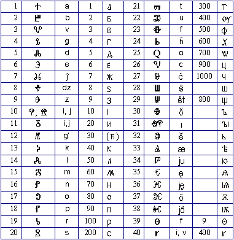
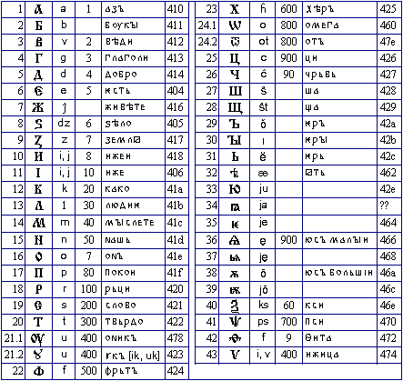
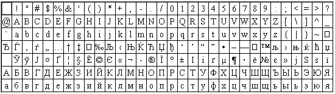

La du ĉefaj slavonaj alfabetoj havas tre similan strukturon kaj tute
malsamajn signobildojn (escepte la
hebredevenan ŝ). La nomoj de samsignifaj literoj identas, kaj laŭ la nomoj
de la du unuaj literoj («az», «buki») oni iam nomas ilin azbukoj. La ordo de literoj estas
preskaŭ unu sama.
Plejparto de la literoj
havis ankaŭ nombran (ciferan) signifon.
Tiparoj disponeblas plurloke:
- por
Makintoŝo
- http://www.maccampus.com/Fonts/OldChSlav.htm
- por Vindozo
- ftp://ftp.amu.edu.pl/pub/Serbo-Croat/ocsfonts.zip.
- Pri glagolico
- Pri kirilico
La kroatoj kredas, ke glagolicon kreis ilia samlandano s-ta Hieronimo la
Stridonano (347–419), la tradukinto de Vulgato ☺. Ĉiel ajn,
regas ĝenerala konsento, ke glagolico estas pli malnova ol kirilico.
Ĉar laŭ la tradicio la slavonan alfabeton kreis s-ta Cirilo, la plimulto
de la filologoj opinias, ke li fakte kreis glagolicon, kaj kirilico poste
heredis lian nomon.
Mi opinias pli konvinka la opinion de malplimulto,
kiu supozas ke glagolico ekzistis jam antaŭ s-ta Cirilo, kiu eble ĝin uzis
por siaj tradukoj — kaj eble, kiel bazon por alfabeto kiu poste ricevis
lian nomon. Estas pluraj cirkonstancoj favoraj por tiu opinio.
- La formo de la glagolicaj signobildoj
tre similas tiun de la misiistaj alfabetoj kiuj aperis en 4–5 jc (ekz-e la
kopta). La literoj estas konstruitaj el figuroj, simbolaj por la kristanoj:
la kruco, per kiu la alfabeto komenciĝas; la cirklo (eterno), la triangulo
(triunio). Kelkaj oftaj kaj kulte signifaj vortoj estas okulkroĉe simetriaj
(ekz-e I~C = Jesuo).
- Kelkaj verkoj pri la estiĝo de la slavaj literoj havas evidentan
kontraŭgrekan tendencon. Ekz-e oni emfazas, ke la grekan alfabeton kreis
paganoj (kiuj bezonis por tio jarcentojn), dum la slavajn literojn kreis
«viro sankta» (kaj dum kelkaj monatoj). Tio estus natura, se «la s-ta
viro» estis orienta monofizito (el Egiptujo, Sirio, Armenio — landoj
monofizitaj kies alfabetoj similas glagolicon per sia dizajno).
En la ĉi-suba tabelo estas indikitaj:
- la liternumero en la alfabeto
- la signobildo (iuj havas variojn)
- la fonetika valoro
- la cifera valoro
- la responda litero kirilica.
La liternomojn vd en la tabelo pri kirilico. La litero n-ro 12 en la tradicia
kirilico mankas. Ĝiaj nomoj estas «гервь» aŭ «дервь».

Noto.
En la uzita tiparo mankas ĝustaj signobildoj por Omego
(n-ro 25) kaj Upsilo (n-ro 40).
En la ĉi-suba tabelo estas indikitaj:
- la liternumero en la alfabeto;
- la signobildo (iuj havas variojn);
- la fonetika valoro;
- la cifera valoro;
- la tradicia liternomo slavona;
- la deksesuma kodono laŭ Unikodo (nur tiu de la ĉeflitero).
 Oni povas facile vidi, ke kirilico entenas
la 24 literojn de la Bizancia uncialo, plus la literoj por la slavonaj sonoj
kiuj malestas en la mezgreka. La literoj por Ŝ kaj C, Ĉ venas de la hebreaj
ŝin kaj cade.
La kirilica nombrosistemo sekvas la grekan, kun du
esceptoj: la ciferojn por 90 kaj 900 (la formortintajn pragrekajn kopon kaj
sampon) anstataŭas Ĉo kaj juseto.
Vd ankaŭ
http://ASUdesign.eas.asu.edu/places/Bulgaria/cyr/.
Vindoza
kodpaĝo Cirila CP 1251
Ĝi estas tute eksternorma. 